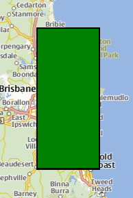

MapRectangle QML Type
The MapRectangle type displays a rectangle on a Map. More...
| Import Statement: | import QtLocation 6.6 |
| Since: | QtLocation 5.5 |
- List of all members, including inherited members
- MapRectangle is part of QML Maps Plugin.
Properties
- autoFadeIn : bool
- border
- border.color : color
- border.width : int
- bottomRight : coordinate
- color : color
- opacity : real
- referenceSurface : enum
- topLeft : coordinate
Detailed Description
The MapRectangle type displays a rectangle on a Map. Rectangles are a special case of Polygon with exactly 4 vertices and 4 "straight" edges. In this case, "straight" means that the top-left point has the same latitude as the top-right point (the top edge), and the bottom-left point has the same latitude as the bottom-right point (the bottom edge). Similarly, the points on the left side have the same longitude, and the points on the right side have the same longitude.
To specify the rectangle, it requires a topLeft and bottomRight point, both given by a coordinate.
By default, the rectangle is displayed with transparent fill and a 1-pixel thick black border. This can be changed using the color, border.color and border.width properties.
Note: Similar to the MapPolygon type, MapRectangles are geographic items, thus dragging a MapRectangle causes its vertices to be recalculated in the geographic coordinate space. Apparent stretching of the item occurs when dragged to the a different latitude, however, its edges remain straight.
Example Usage
The following snippet shows a map containing a MapRectangle, spanning from (-27, 153) to (-28, 153.5), near Brisbane, Australia. The rectangle is filled in green, with a 2 pixel black border.
Map { MapRectangle { color: 'green' border.width: 2 topLeft { latitude: -27 longitude: 153 } bottomRight { latitude: -28 longitude: 153.5 } } }

Property Documentation
autoFadeIn : bool |
This property holds whether the item automatically fades in when zooming into the map starting from very low zoom levels. By default this is true. Setting this property to false causes the map item to always have the opacity specified with the QtQuick::Item::opacity property, which is 1.0 by default.
This property is part of the border property group. The border property group holds the width and color used to draw the border of the rectangle. The width is in pixels and is independent of the zoom level of the map.
The default values correspond to a black border with a width of 1 pixel. For no line, use a width of 0 or a transparent color.
bottomRight : coordinate |
This property holds the bottom-right coordinate of the MapRectangle which can be used to retrieve its longitude, latitude and altitude.
color : color |
This property holds the fill color of the rectangle. For no fill, use a transparent color.
opacity : real |
This property holds the opacity of the item. Opacity is specified as a number between 0 (fully transparent) and 1 (fully opaque). The default is 1.
An item with 0 opacity will still receive mouse events. To stop mouse events, set the visible property of the item to false.
[since 6.5] referenceSurface : enum |
This property determines the reference surface of the rectangle. If it is set to QLocation::ReferenceSurface::Map the edge points are connected with straight lines on the map. If it is set to QLocation::ReferenceSurface::Globe, the edge points are connected following the great circle path, describing the shortest connection of two points on a sphere. Default value is QLocation::ReferenceSurface::Map.
This property was introduced in Qt 6.5.
topLeft : coordinate |
This property holds the top-left coordinate of the MapRectangle which can be used to retrieve its longitude, latitude and altitude.